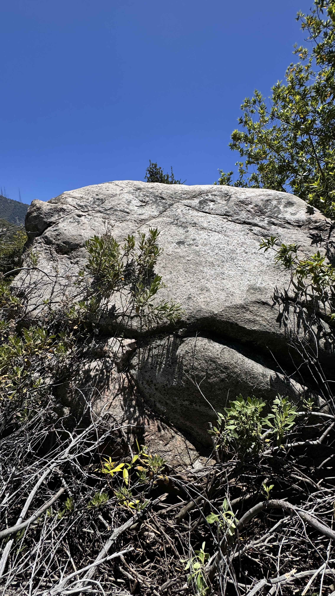

Eaton Canyon
Where do we even begin dawg? Eaton Canyon is home to the legendary Idlehour campground and it's world famous "Eaton Canyon Falls." You didn't even think for one sec that there would be bouldering here, let alone maybe some aid routes in some bridges, did you? Well, this page will be dedicated to the bouldering and climbing of Eaton Canyon. There are some solid boulders in and around Idlehour campground which can be safely climbed if one brought a crash pad 6 miles up a road and then down a steep trail. We've got slick polished granite and some loose classic gabe rock to climb on.
Ella Shaft Boulder
Honestly man, here are the coords for it: 34.21874, -118.09696 and good luck getting there. When Dima Kogan and Matthew Jackson went there, they bushwhacked through thick brush while getting bitten by red ants and bitten by mosquitos. There's possibitlities for some overhung stuff on the south side of the boulder and some vert stuff on the east side.
Ella Shaft V0
FA: Dima Kogan 6/29/2024
You hiked all the way out here for some slab. Self explanatory, slab away.
Dima and Matthew on top